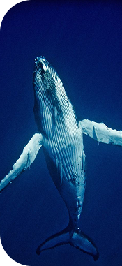

Mamíferos marinos
Los gobernantes de sangre caliente de las profundidades
Introducción
Los mamíferos marinos son un grupo diverso de animales de sangre caliente que se adaptaron a la vida en el océano. Respiran aire, amamantan a sus crías y mantienen su temperatura corporal en aguas frías. Desde inmensas ballenas hasta juguetonas nutrias marinas, estas criaturas son esenciales para el equilibrio de los ecosistemas marinos.
Clasificación y características
Los mamíferos marinos pertenecen a varios órdenes: cetáceos (ballenas, delfines, marsopas), pinnípedos (focas, leones marinos, morsas), sirenios (manatíes, dugongos) y carnívoros marinos como las nutrias.
- Respiran aire a través de pulmones
- De sangre caliente con gruesa capa de grasa aislante
- Amamantan a sus crías con leche
- Aletas adaptadas para la natación
- Cerebros altamente desarrollados y comportamiento social complejo
Hábitos alimenticios
Las estrategias de alimentación varían ampliamente: desde las ballenas barbadas que filtran toneladas de krill al día, hasta los delfines que cazan peces en grupo coordinado usando ecolocalización.
Comportamientos
Muchos mamíferos marinos exhiben estructuras sociales complejas, migraciones de larga distancia y comunicación sofisticada a través de vocalizaciones que pueden viajar miles de kilómetros.
Especies destacadas

Delfín Nariz de Botella

Nutria Marina

Foca Arpa
Hábitats y distribución
Los mamíferos marinos se encuentran en todos los océanos de la Tierra, desde el hielo ártico hasta los arrecifes de coral tropicales. Muchas especies realizan migraciones anuales de miles de kilómetros.
Océano abierto
Delfines y grandes ballenas recorren largas distancias siguiendo fuentes de alimento.
Aguas polares
Regiones árticas y antárticas hogar de focas, morsas y ballenas adaptadas al frío.
Bosques Kelp
Ecosistemas cercanos a la costa donde las nutrias marinas desempeñan un rol clave en la salud del ecosistema.
Conservación y amenazas
Caza comercial de ballenas
La caza excesiva histórica llevó a muchas especies al borde de la extinción.
Enredo en artes de pesca
La captura incidental en redes comerciales mata a cientos de miles de mamíferos marinos cada año.
Contaminación acústica oceánica
El sonar, el tráfico marítimo y la actividad industrial perturban la comunicación y navegación.